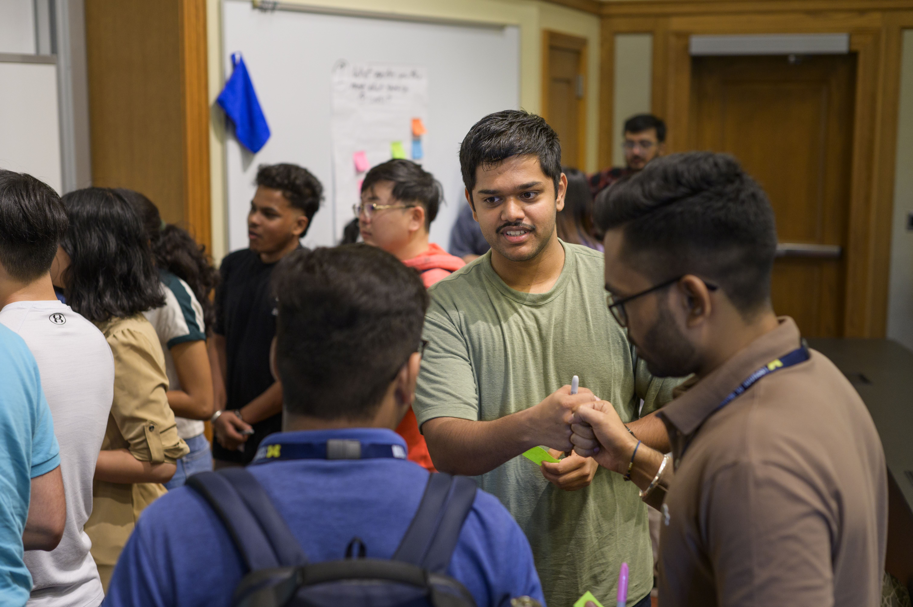

Start Your Engaged Learning Partnership
Turn your preparation into action. Use this guide to establish professional communication, conduct productive first meetings, align expectations, and build a strong foundation for your partnership.
Why a Strong Start Matters
First impressions can shape the trajectory of an engaged learning partnership. The beginning of your project is where initial ideas become shared expectations, responsibilities, and commitments.

Rather than immediately jumping into project work, use this stage to establish how your team and partner will work together. Early conversations provide an opportunity to clarify the project scope, understand your partner's priorities, identify responsibilities, and create communication practices that support the project throughout the experience.
By establishing clear expectations, creating shared agreements, and developing a consistent approach to communication early, your team can build trust with your partner while creating the structure needed to navigate ambiguity and changes throughout the project.
The Value of Navigating Friction & Active Execution
The middle of an engaged learning project is where real growth happens—and where real challenges surface. Real-world projects rarely follow a straight line. Requirements shift, team dynamics evolve, clients face unexpected internal constraints, and research data yields surprising results.
The true value of this phase lies in developing resilience, adaptability, and ethical agility. Learning to manage "scope creep," navigate mid-project feedback, and re-align technical decisions with human needs are the exact experiences that distinguish top UMSI graduates. When you view friction not as a barrier, but as a natural part of the applied learning process, you develop the strategic problem-solving skills needed in modern information careers.
Phase 2: Starting the Experience
Establishing professional communication, conducting initial meetings, and finalizing partnership agreements.
Value & Narrative
First impressions shape the trajectory of a partnership. The starting phase is where abstract project ideas turn into structured, professional commitments. By establishing clear team contracts, co-creating agendas, and aligning on project scope early, you build safety within your team and trust with your client. Learning how to navigate early ambiguity is one of the most valuable professional capabilities you will gain at UMSI.
Focus & Objectives
- Partner Communication: Draft clear, professional outreach to launch working relationships.
- First Meetings: Structure productive kickoff meetings that define roles and project bounds.
- Formalizing Agreements: Document team commitments and scope agreements shared by all stakeholders.
Featured Resources & Handouts